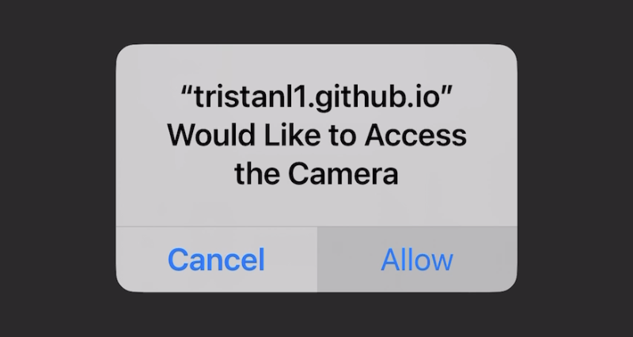

After clicking the "Start" button either on the home page or here, please allow our app to access your device's camera to scan and learn more about the landmarks on our campus. Once you've hit "Allow" for the camera permissions, the app displays the feed from the camera, and you can then scan different buildings and landmarks on campus.
At the bottom of the screen is a section with four buttons. First, the button with the question mark links to a more interactive page about learning about the landmark or related alums, which can range from a multiple-choice quiz to a matching game to an image carousel. Then, the button with the exclamation mark links to a page displaying information about the building and either notable alums related to it or the building's hours of availability. The button with the map marker links to a map displaying where you are on campus and what other buildings are near you. Finally, the rightmost button allows you to switch between scanning buildings and scanning QR codes on these buildings to display AR elements.
Note that the two leftmost buttons are "greyed out" until you scan a building and the app recognizes it. You'll see that the app recognizes the landmark when the text on the top of the display changes from "Point the camera to a building" to the name of the building your device's camera is pointing to. That way, you can access these pages according to your nearby landmark.